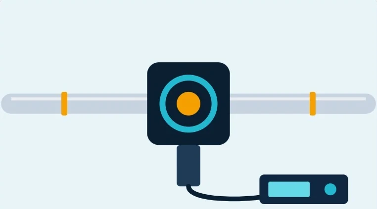

Repeatable
Each weld follows a programmed schedule set for the material, wall thickness and tube size, so joint 500 matches joint 1.
Automated orbital GTAW on stainless and electropolished tubing, carried out under clean conditions by trained PROMAXX welders. Every joint is logged, inspected and tested before the line is handed over.

The weld head turns around the tube under computer control, so every joint gets the same heat, speed and shielding. The result is a smooth, fully fused bead that does not trap particles or moisture.
Each weld follows a programmed schedule set for the material, wall thickness and tube size, so joint 500 matches joint 1.
Argon shields the joint inside and outside. Autogenous welds add no filler, leaving a smooth inner surface for UHP gas.
Weld logs, weld maps and borescope records tie every joint to its welder, schedule and inspection result.
Pre-set schedules cut set-up time, and consistent joints mean fewer cut-outs and re-tests before commissioning.

Toxic and pyrophoric services are run in coaxial tubing, with purge, vent and LOTO discipline throughout.
Weld schedules are set for each material and size, and test coupons are welded and checked before production starts.
Square-cut and faced ends, deburred and cleaned, with tubing kept bagged and capped until it is welded.
Argon purge inside and outside the tube, then the orbital head runs the programmed schedule.
Visual and borescope inspection of the bead, recorded against the joint on the weld map and log.
Helium leak testing, pressure testing, and particle, moisture and oxygen (PMO) certification where specified.
A complete documentation package handed over with the line, ready for your quality team and audit.
You receive a turnover package with each system, built to the standards below.
UHP gas, vacuum and tool hook-up in front-end fabs, assembly and test.
Bulk and specialty gas lines for PERC, TOPCon and HJT production.
Stainless process and clean-utility tubing installed to hygienic practice.
Laboratory gas distribution, analyser lines and instrument tubing.
Send us your line list, tube sizes and schedule. We will come back with a crew plan and test plan within a week.